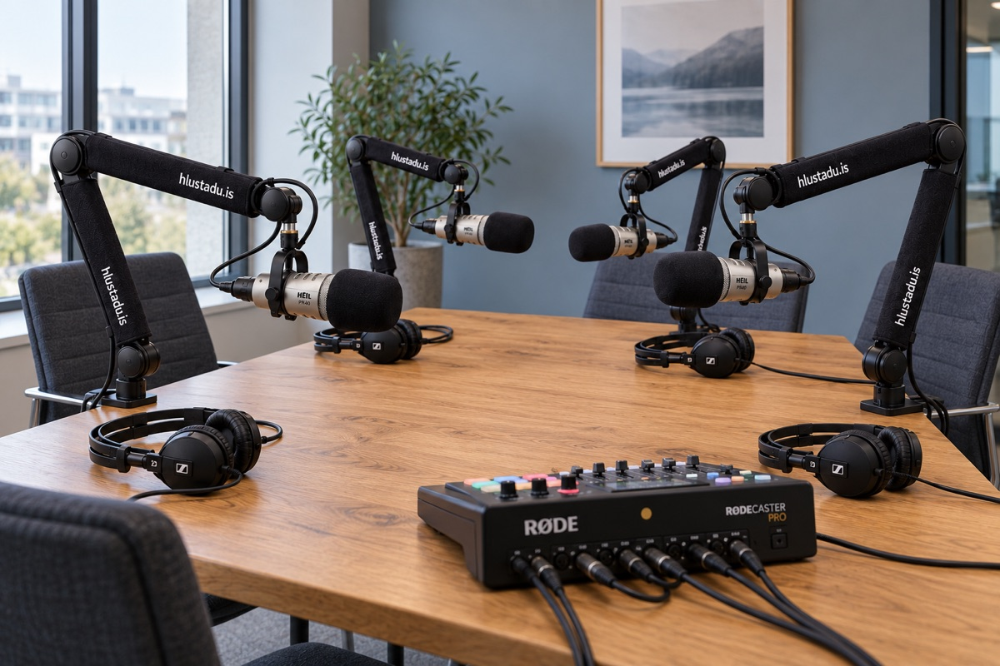

Þú tekur upp.
Sendu okkur upptökuna. Við vinnum hana í fullbúinn þátt og sjáum um að koma honum út samkvæmt samkomulagi.
Nánar um hljóðvinnslu.Hlaðvörp · Upptökur · Hljóðvinnsla
Þú tekur upp. Við sjáum um rest.
Við sjáum um klippingu, hljóðvinnslu og frágang hlaðvarpsins — og útgáfu ef þú vilt. Eða við komum með stúdíóið til þín.
Ræðum hlaðvarpið þittSendu okkur upptökuna. Við vinnum hana í fullbúinn þátt og sjáum um að koma honum út samkvæmt samkomulagi.
Nánar um hljóðvinnslu.
OKKAR BÚNAÐURVið komum með búnaðinn, setjum upp og tökum upp hjá þér. Síðan sjáum við um vinnsluna og fráganginn.
Ræðum upptöku á staðnum.Sami lestur. Skiptu á milli hrárrar upptöku og unnins hljóðs.
Hrá upptaka
Að baki hlustaðu. stendur Ásgeir Páll með áratuga reynslu af útvarpi, upptökum og hljóðvinnslu. Sú reynsla nýtist í hverjum þætti — í klippingunni, hljóðinu og flæðinu.
Við vinnum með fyrirtækjum, stofnunum og einstaklingum sem vilja gera faglegt hlaðvarp og fá aðstoð við tæknina og vinnsluna.
Nánar um hlustaðu.Við tökum einnig að okkur hljóðvinnslu, auglýsingar og innlestur, auk ráðgjafar um upptökubúnað og uppsetningu.
Hugmyndin byrjar hjá þér
Hvort sem þú ert með tilbúna upptöku eða hugmynd að þætti, þá hjálpum við þér að finna næsta skref.
Skrifaðu okkur — eða leyfðu okkur að heyra í þér.